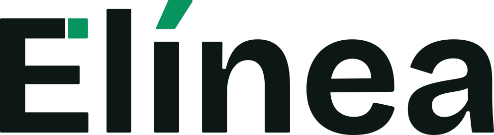

Clareza
O conteúdo explica a operação com linguagem simples e hierarquia forte.

Identidade visualUma linguagem visual para o site institucional e o painel da Elínea.
O conteúdo explica a operação com linguagem simples e hierarquia forte.
Espaço negativo e composições editoriais organizam a leitura.
Fotografias mostram comerciantes e ambientes reais, com tratamento natural.
As duas versões oficiais em uso no site preservam o mesmo desenho e proporção. A escolha depende da superfície.
O header usa a versão branca sobre o hero escuro e troca para a versão escura em superfície clara. O footer usa a versão branca sobre fundo escuro.
Verde Elínea, preto profundo e superfícies claras formam a base. Os tons auxiliares organizam contraste, estados e leitura.
Valores de tela em hexadecimal. Cores de impressão e equivalências CMYK ainda não foram definidas.
A Inter faz a ligação visual entre produtos. O site a usa em toda a interface; o admin reserva a Inter aos títulos e usa Segoe UI na leitura operacional.
Inter em todos os papéis
Ecommerce simples para negócios reais.
Inter + Segoe UI
Uma operação sob controle.
Inter nos títulos semânticos (h1–h6). Segoe UI nos textos, controles e navegação. Os pesos existentes do painel são preservados.
O site apresenta a marca em capítulos amplos. O admin concentra tarefas, tabelas e formulários. Tipografia, cor e logo conectam os dois contextos.
Acompanhe o que precisa de atenção hoje e avance com uma operação organizada.
Exemplos esquemáticos; não representam telas ou conteúdo comercial do produto.
Fotografia documental e natural aproxima a plataforma de quem vende. A composição protege a leitura e mantém o assunto humano visível.
Luz natural, textura real, postura espontânea e ambientes com sinais de uso. O resultado deve parecer vivido e profissional.
Estas orientações traduzem a direção visual atual em decisões práticas. Onde não há medida oficial, o manual não inventa uma.
Use os SVGs oficiais. Versão escura em superfícies claras; versão branca em superfícies escuras. Confirme contraste no contexto final.
Redimensione o logo sem distorção. Mantenha espaço ao redor para que ele não encoste em outros elementos.
Faça títulos orientarem a leitura. Use verde para ação, estado ou ênfase com propósito, sem transformar cada elemento em destaque.
Alterne claro e escuro quando a narrativa pedir. Use cards para informação real, evitando molduras apenas decorativas.
Prefira pessoas e negócios em situações plausíveis. Preserve anatomia, textura e luz naturais.
Não esticar ou recolorir o logo. Evite gradientes chamativos, vidro em excesso, sombras pesadas e animações sem função.
Área de proteção com medida fixa, tamanho mínimo, versões monocromáticas adicionais, equivalências CMYK/Pantone, aplicações impressas e avatar social ainda precisam de validação antes de virarem regras oficiais.
Este manual resume o estado aprovado dos projetos em setembro de 2026. Os arquivos abaixo são a referência para implementação digital.
Manual digital de trabalho. Reúne decisões já aprovadas e identifica recomendações de aplicação. Antes de publicar um guia definitivo para terceiros, valide as especificações ainda em aberto na página anterior.
{kind=link}
{kind=link}